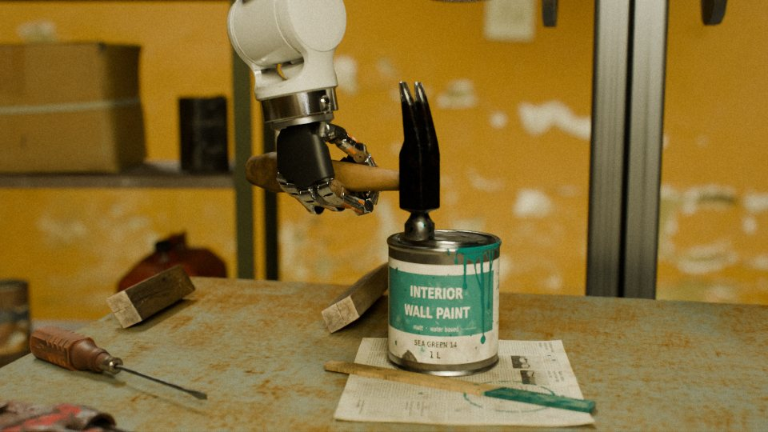

dashboard · all 50 tasks: trials and success rate · this task in the gallery · generated 2026-11-28 09:03 EST by python s2/s2loop/daily50_trials_page.py

Tap the lid of the paint tin shut.
the instruction S2 was given, read from the trial record (instruction)
FAIL best of 4 trial(s); 0 passed. First attempt (trial 40): FAIL. Not passed in any attempt so far. Played by session agents, probe series — not a counted test series.
new test environment (no hand-table collision): FAIL added 15:0x. The lid sits tilted, 6 mm proud on one side. S2 planned three slow presses on it and said itself that a tap is a blow, which the skills do not have. Version 3 made the first press (15:07): the index fingertip pressed the proud side with up to 11.4 N for about a second and the lid did not move at all. It needs a blow or far more force: outside the skills as they are
solid table (before 2026-11-26 23:55): not tried not tried on the solid table
| written | file | plan | why, in S2's words |
|---|---|---|---|
| 11-27 15:04 | keypoints.json | push (3 keypoints), then push (3 keypoints), then push (3 keypoints) | The lid lies in the tin's mouth tilted 4.6 deg: its near-left side is home (flush with the rim) and its far-right side stands 6.1 to 6.6 mm proud, so the job is to bring that one side down; the skills have no blow, so the nearest thing is a slow press of one fingertip straight down. Call 1 presses the proud side (the one press that matters), call 2 the lid's middle (seats it level if it has to go down bodily), call 3 the proud side again nearer the edge (a second chance if the first met the lid beside the point or the finger gave way); if the ticks run short, drop calls from the end.Could not settle from one look: (skill) 'TAP' IS A BLOW AND THE SKILLS HAVE NONE. I wrote the nearest thing: slow presses of one fingertip (about 0.04 m/s, held 0.3 s, at most about 15 to 19 N). If the lid needs a knock, or more force than a fingertip gives before it yields (3 to 17 N), to snap into the rim, it will stay proud and this plan fails whatever the point. (e) THE OTHER READING: tap it with the hammer (object 0: head middle (-0.425, -0.310), top 0.964; handle along y at x -0.405 from y -0.33 to -0.565, far end resting on a block). The nearest plan the skills allow would be ONE transport of the hammer with a 'pressed' set-down (about 7 mm) of its head on the lid's proud side at (-0.2125, -0.2007, 1.0184), then no tick is left for more than one press. I did not choose it: a side-held thing arrives 12 to 40 mm off and turned (T3) on an 88 mm lid 13 cm up on a tin taken as loose, the set-down force is not control |
| 11-28 08:05 | keypoints_q1.json | push (3 keypoints), then push (3 keypoints), then push (3 keypoints) | The lid sits on the tin, a few mm proud, highest at the far side; a blow is not available, so fingertip presses on the lid: far side, middle, near side.Could not settle from one look: a tap (blow) is not available and the mallet held as a tool gives no more than the arm (15 N): presses are the nearest the lid shuts under 11 to 15 N; if it needs more it cannot be done lid heights seen: 1.018 far, 1.016 middle, 1.011 near |
| when | run | program | test environment | judged word, or the skill's refusal | rows of motion |
|---|---|---|---|---|---|
| 11-28 08:34 | t03_paint_lid_shut_f27_q1 | version 3, freeze 27 | no hand-table collision | FAIL | 264 |
| 11-27 15:07 | t03_paint_lid_shut_f8 | version 3, freeze 8 | no hand-table collision | FAIL | 269 |
written 2026-11-26 09:03 · attempt 4 · played after reading this task's notes · episode index 123 · 4 turns (1 plan, 1 act, 2 replan) · 789 ticks of 1500 used by the turns · run 20261126T135214Z-44d72a0b · session daily50_t03-34ae2ebb
The record holds no new steps.
The record holds no new steps.
| turn | phase | skill | what S2 said it does and why | reply | ticks |
|---|---|---|---|---|---|
| 1 | PLAN | get_task_context + | measure hammer parts, tin lid and the handle grasp at zero ticks, sweep check_plan for attach + carry that rolls the hammer face-down over the lid; plan in result | ok | at 0no motion |
| 2 | ACT | propose_grasps + | commit attach + roll-carry to the hover over the lid (plan steps 1-2), look at the face in the hand, then 3 fast face-down strokes with the tin excluded (steps 3-4) | ok | 0–54911.0 s |
| 3 | REPLAN | get_task_context + | the stroke program was refused at its start (the seen box of the held hammer touches arm link 5 in the planner); same strokes planned without the attached box, tin (and seen head) excluded: align, 3 fast face-down strokes on the lidreason: the stroke program was refused at its start (the seen box of the held hammer touches arm link 5 in the planner); same strokes planned without the attached box, tin (and seen head) excluded: align, 3 fast face-down strokes on the lid | ok | at 549no motion |
| 4 | REPLAN | plan_motion + | every arm program is refused at its start (the seen box of the held hammer touches arm link 5), so the swing cannot be planned; one more try with depart_contact, else let the hammer fall face-first onto the lid from where it hangs (reason: every arm program is refused at its start (the seen box of the held hammer touches arm link 5), so the swing cannot be planned; one more try with depart_contact, else let the hammer fall face-first onto the lid from where it hangs ( | not okplanning_failed | 549–7894.8 s |
Ticks: the tick range the turn moved the robot over (one tick is 20 ms). ▶ m:ss under a turn number is where that turn starts in the video; click a row to go there.
| skill | ok | the skill's own verification (head camera, joint and servo effort) | what the record showed afterwards |
|---|---|---|---|
| commit_plan | ok | held yes | — |
| commit_plan | not ok | — | |
| commit_plan | ok | — |
written 2026-11-26 07:26 · attempt 3 · played after reading this task's notes · episode index 117 · 5 turns (1 plan, 1 look, 1 act, 1 check, 1 replan) · 1146 ticks of 1500 used by the turns · run 20261126T121640Z-5f8613e4 · session daily50_t03-b6f6434f
The record holds no new steps.
| turn | phase | skill | what S2 said it does and why | reply | ticks |
|---|---|---|---|---|---|
| 1 | PLAN | point_at + | measure the hammer parts, their grasps and the lid profile at zero ticks; plan = policy grasp of the hammer handle, lift, head over the lid's high side, three taps, hammer back, hand away | ok | at 0no motion |
| 2 | LOOK | propose_grasps | which other size classes the handle part may be asked as, and a synthesized grasp of the handle with each (zero ticks) | ok | at 0no motion |
| 3 | ACT | attach x2 + | attach the hammer by its handle (synthesized tri50 grasp) and lift 13 cm; measure the head in the hand from depth; own linear program: head over the lid's high side, three taps, back; carry down, detach, reach to the start pose (plan s | ok | at 0no motion |
| 4 | REPLAN | attach x4 + | the attach's own straight rise was refused 4.9 mm from the hammer's head part; same plan with the lift leaning 2 to 4 cm away from the head (rise in the carry), else the old verb acquire on the same part; then measure, three taps, breason: the attach's own straight rise was refused 4.9 mm from the hammer's head part; same plan with the lift leaning 2 to 4 cm away from the head (rise in the carry), else the old verb acquire on the same part; then measure, three taps, b | not okplanning_failed | 0–114622.9 s |
| 5 | CHECK | get_task_context | the rest of the act fragment's reply, the lid profile from depth now, the hand's forces and where the palm is (zero ticks) | ok | at 1146no motion |
Ticks: the tick range the turn moved the robot over (one tick is 20 ms). ▶ m:ss under a turn number is where that turn starts in the video; click a row to go there.
| skill | ok | the skill's own verification (head camera, joint and servo effort) | what the record showed afterwards |
|---|---|---|---|
| commit_plan | ok | — | |
| execute_plan | ok | — | |
| commit_plan | not ok | — | |
| commit_plan | not ok | — | |
| commit_plan | ok | turn 4's reply, not said of which of its 5 skill calls: held yes | — |
written 2026-11-26 03:07 · attempt 2 · played after reading this task's notes · episode index 111 · 11 turns (1 plan, 5 look, 2 act, 2 check, 1 replan) · 1283 ticks of 1500 used by the turns · run 20261126T075252Z-45d63d1d · session daily50_t03-049afada
The record holds no new steps.
| turn | phase | skill | what S2 said it does and why | reply | ticks |
|---|---|---|---|---|---|
| 1 | LOOK | point_at + | measure the hammer handle and head parts, the lid high point, and ask the policy grasps for the hammer parts (0 ticks) | ok | at 0no motion |
| 2 | LOOK | propose_grasps x25 + | ask every size class by name for the hammer parts and probe heights around the hammer (0 ticks) | ok | at 0no motion |
| 3 | LOOK | propose_grasps x9 + | ask the listed size alternatives by name for the hammer handle and map the block under the handle tail (0 ticks) | ok | at 0no motion |
| 4 | LOOK | point_at x9 + | no policy grasp exists for the propped hammer; measure the lid profile, the fist footprint over the tin by solve_ik and dry-run a knuckle tap program (0 ticks) | ok | at 0no motion |
| 5 | PLAN | — | no policy grasp for the propped hammer, so tap the lid's high side three times with the rigid heel of the open palm-down hand (own arm program), then park open | ok | at 0no motion |
| 6 | ACT | point_at x9 + | sweep hand turn by dry run, then three open-hand heel taps on the lid's high side and park (plan steps 1 and 2) | not okexecution_failed | 0–3907.8 s |
| 7 | CHECK | point_at x9 | lid profile after the three heel taps against the profile before (0 ticks) | not okexecution_failed | at 390no motion |
| 8 | CHECK | point_at x9 | lid profile after the three heel taps against the profile before (0 ticks) | ok | at 390no motion |
| 9 | REPLAN | plan_motion x2 + | replan+act: the three heel taps left the lid as it was; one changed try: a guarded descent to find the contact height, a hard slow press on the high side, a 1 cm drag toward the low side, rise and park openreason: replan+act: the three heel taps left the lid as it was; one changed try: a guarded descent to find the contact height, a hard slow press on the high side, a 1 cm drag toward the low side, rise and park open | ok | 390–8449.1 s |
| 10 | ACT | plan_motion + | the first three taps ended 1.3 cm above the measured contact height and never touched; three fast open-hand heel blows to 3 cm past the measured contact height, then park open (last try) | ok | 844–12838.8 s |
| 11 | LOOK | look | look | ok | at 1283no motion |
Ticks: the tick range the turn moved the robot over (one tick is 20 ms). ▶ m:ss under a turn number is where that turn starts in the video; click a row to go there.
| skill | ok | the skill's own verification (head camera, joint and servo effort) | what the record showed afterwards |
|---|---|---|---|
| execute_plan | ok | — | |
| execute_plan | ok | — | |
| execute_plan | ok | — | |
| execute_plan | ok | — |
written 2026-11-25 15:11 · attempt 1 · played without this task's notes · episode index 40 · 27 turns (1 plan, 10 look, 7 act, 6 check, 3 replan) · 1301 ticks of 1500 used by the turns · run 20261125T191537Z-c14ebb8d · session daily50_t03-8a4b9989
Reason video, 73 s, 1.44 MB. The picture is the robot's head camera, drawn from the flight record after the session (the one view S2 has). The left panel's colour is the phase; the caption is what S2 said it does; a turn that moved nothing is held as a card (the plan's steps, the picture S2 looked at); the ticks after close play at double speed in grey. The status is on the last card only.
| turn | phase | skill | what S2 said it does and why | reply | ticks |
|---|---|---|---|---|---|
| 1▶ 0:02 | LOOK | look | first look at the table (agent look) | ok | at 0no motion |
| 2▶ 0:04 | LOOK | point_at (grid) | measure the paint tin's top and lid heights from depth before planning; nothing moves | ok | at 0no motion |
| 3▶ 0:05 | LOOK | solve_ik, localize_object | fit the lid's plane and the rim height by direction, ask reach and the mask service for the lid; nothing moves | ok | at 0no motion |
| 4▶ 0:07 | LOOK | point_at, solve_ik | measure the press point on the lid's high side, its pixel, and whether parking poses beside the tin are in reach; nothing moves | ok | at 0no motion |
| 5▶ 0:08 | PLAN | plan | the lid is a flat disc tilted 4.3 degrees (high side far-right, 5 to 7 mm proud of the rim); I will press its high side down once with the index fingertip, park the open hand beside the tin, measure the lid's plane, and press deeper once only if it is still tilted | ok | at 0no motion |
| 6▶ 0:11 | ACT | guarded_press | press the lid's high side (28 mm uphill of its centre) straight down 10 mm with the index fingertip, slowly, once, per plan step 1 | ok | 0–3547.1 s |
| 7▶ 0:19 | CHECK | point_at (robot layer) | the press changed nothing on the lid (depth change 0.06 mm), so I locate the index fingertip at its hover from the robot's own depth layer to see whether it was over the press point; nothing moves | ok | at 354no motion |
| 8▶ 0:20 | CHECK | camera calibration arithmetic | find where the index fingertip really stands at the hover, from the robot depth layer and the camera calibration, against where the press point is; nothing moves | ok | at 354no motion |
| 9▶ 0:22 | CHECK | robot depth map | map the hand's own depth around the hover to see how far along the pointing finger the camera sees and whether the fingertip can have reached the lid; nothing moves | ok | at 354no motion |
| 10▶ 0:23 | ACT | guarded_press | the slow 10 mm press left the lid exactly as it was, so I re-execute the press as a real tap: faster (0.25 m/s), deeper (25 mm), 20 mm uphill of the centre, and stay pressed so the camera and the joints show what the lid does under the finger | ok | 354–4501.9 s |
| 11▶ 0:26 | CHECK | depth analysis | under a 25 mm commanded press the hand stopped at the lid's surface (arm 39 mrad behind, finger bent) and the lid stayed tilted, so I measure from the first clean view where the lid's edge lies against the rim to learn how it is held; nothing moves | ok | at 450no motion |
| 12▶ 0:27 | REPLAN | plan | two fingertip presses left the lid exactly as it was and the second showed the hand stopped at the lid with the finger bending, so I change the skill to a knuckle tap with the closed fist written as my own program, after a clean lookreason: two fingertip presses on the lid's high side (10 mm slow; then 25 mm at 0.25 m/s, staying pressed) left the lid exactly as it was (tilt 4.3 deg, depth change under 0.1 mm). Under the second one the hand stopped at the lid's surface: palm 22 mm above its planned end, arm joints 39 and 15 mrad behind their commands, index finger bent back (base joint +0.16 rad, 0.2 N m), guard not reached. So the fingertip does touch the lid and the lid holds against what one pointing finger passes on; pressing deeper only bends the finger more. Change of skill, not of argument: a tap with the knuckles of the closed fist (four fingers, much stiffer), as a program of my own, because no skill of the 21 strikes downward with an empty hand. | ok | at 450no motion |
| 13▶ 0:30 | ACT | plan_motion + | lift the pressing finger 7 cm straight up and park the open hand beside the tin, so that the lid is seen whole after the release and the next plan starts from a clean view (replan step R1) | ok | 450–5892.8 s |
| 14▶ 0:34 | LOOK | solve_ik (fist ruler) | measure the closed fist against the lid with solve_ik as a ruler (fingers down, palm toward the robot): how low the knuckles hang under the palm and where they are along the palm's facing direction; nothing moves (replan step R2) | ok | at 589no motion |
| 15▶ 0:35 | LOOK | solve_ik (scans) | the fist's lowest link (middle finger) hangs 11.6 cm under the palm origin; now scan the fist sideways and downhill over the tin's edge with solve_ik to find where that link sits relative to the palm origin; nothing moves | ok | at 589no motion |
| 16▶ 0:37 | LOOK | plan_motion (dry run) | the lid's edge lies 45 mm from the tin's axis on its high side and 41 mm on its low side, so it sits about 2 mm toward the high side as if that edge rested on the rim; dry-run (no execution) a sideways nudge of the high edge with the pointing fingertip to see whether the planner accepts it | ok | at 589no motion |
| 17▶ 0:38 | REPLAN | plan | the measured edge shows the lid sits about 2 mm toward its high side with that edge standing over the rim, and a downward load between its two resting edges cannot move it, so I first nudge the high edge sideways toward the low side with the fingertip and keep the knuckle tap for afterreason: before spending ticks on the fist tap I measured the lid's edge from the clean view: it lies 45 to 46 mm from the tin's axis on the high side, 41 mm on the low side and 43 to 44 mm across, so the lid sits about 2.4 mm toward its high side; its low edge is down beside the rim and its high edge stands 5 to 6 mm over the rim. A downward load between those two edges (the second press, tens of newtons by the finger's own joint torques) cannot move a lid that rests on both, which is what was seen. So the next action is a small sideways nudge of the high edge toward the low side with the pointing fingertip, so that the edge can come off whatever it rests on and drop; the knuckle tap of the earlier replan stays as the action after it. | ok | at 589no motion |
| 18▶ 0:41 | ACT | plan_motion + | set the pointing fingertip down just outside the lid's high edge, 1.5 mm over the far rim, and move it 8 mm toward the low side to nudge that edge off what it rests on, then rise (replan step N1) | ok | 589–7783.8 s |
| 19▶ 0:46 | CHECK | plan_motion (dry run) | the 8 mm nudge left the lid exactly as it was and the arm met no resistance (joint error 5 mrad), so the soft finger passed on under a newton; dry-run (no execution) a longer 26 mm pull with the finger held vertical so its tip stays hooked behind the lid's edge | ok | at 778no motion |
| 20▶ 0:47 | LOOK | plan_motion (dry run, refused) | dry-run (no execution) the knuckle tap from where the hand stands: fist with fingers down over the lid's high side, 3.5 cm hover, fast straight descent to 5 cm past first touch with an arm-torque guard, short stay, rise | okdry run refused: ik_unreachable at 78 % of the descent (joint 1 at its limit); nothing executed | at 778no motion |
| 21▶ 0:49 | ACT | plan_motion + | re-execute the nudge with changed parameters: finger held vertical so its tip stays hooked behind the lid's high edge, pull 16 mm toward the low side, and stop there with the finger still engaged so its joints show whether it holds the edge and what the lid does | ok | 778–9012.5 s |
| 22▶ 0:52 | ACT | plan_motion + | the fingertip now holds the lid's high edge with about 1 N (finger joints bent back 0.08 rad) and neither lid nor tin moved, so I pull 7 mm further toward the low side and read the finger, the lid and the rim again | ok | 901–9410.8 s |
| 23▶ 0:53 | REPLAN | plan | with the finger engaged the lid held against 1.15 N sideways and the fingertip then slipped over its edge, and the knuckle tap is refused beyond 3 cm (arm joint at its limit), so the last try inside the hand's envelope is a real tap: fingertip arriving at 0.40 m/s, twice, nearer the high edgereason: the sideways pull was measured with the finger still engaged: the fingertip held the lid's high edge with 1.0 N, then 1.15 N (finger joints bent back 0.09 rad, joint torques 0.12 N m), then rode up over the edge; the lid's plane (tilt 4.36 deg) and the rim (centroid unchanged to 0.01 mm) did not move. So the lid holds against 1.15 N sideways at its high edge and against a downward press of 25 mm commanded travel; the soft finger cannot push sideways harder (it bends and slips over the 5 mm edge). The knuckle tap was dry-run and refused beyond 3 cm past first touch (arm joint 1 at its limit), so it would give no more than the fingertip already did. What is left inside the hand's envelope is the one thing the instruction names and I have not yet done at full speed: a real tap, the fingertip arriving at 0.40 m/s (the empty-hand cap) instead of 0.25, twice, nearer the high edge for more leverage. | ok | at 941no motion |
| 24▶ 0:56 | ACT | plan_motion + | lift the finger 5 cm off the lid's edge, then tap the lid twice with the fingertip arriving at 0.40 m/s, 32 mm uphill of its centre (replan step T1) | ok | 941–11844.9 s |
| 25▶ 1:01 | CHECK | move_to_pose (hand open) | the two fast taps met the lid (palm 22 mm behind its plan) and changed nothing, so I park the open hand beside the tin and measure the lid and the rim from a clear view for the ending (replan step T2) | ok | 1184–13012.3 s |
| 26▶ 1:04 | LOOK | localize_object, propose_grasps | the lid is as it was at the start and no ticks are left for another try; before closing I ask, without moving, whether the hammer on the table has a feasible grasp, as information for a later attempt | okpropose_grasps: no_grasp (the words 'the hammer' returned the whole 39x29 cm tool cluster, which resembles no class with a clip) | at 1301no motion |
| 27▶ 1:06 | LOOK | look | last look (agent look): lid as at the start, tin in place, hand open and 27 cm away; then close | ok | at 1301no motion |
Ticks: the tick range the turn moved the robot over (one tick is 20 ms). ▶ m:ss under a turn number is where that turn starts in the video; click a row to go there.
| skill | ok | the skill's own verification (head camera, joint and servo effort) | what the record showed afterwards |
|---|---|---|---|
| guarded_press #1 (max_travel 10 mm, 0.05 m/s, stay 0.5 s, retract) | ok | passed None (no guard stop); depth change around the target 0.06 mm, target_shift 0.45 mm, lid plane after: tilt 4.3 deg as before | fingertip met the lid at 0.05 m/s, peak 23 N on the lid; the lid moved under 0.1 mm |
| guarded_press #2 (max_travel 25 mm, 0.25 m/s, stay 0.3 s, retract=False) | ok | passed None (no guard stop); at the pressed end the palm stood 22 mm above its planned end, arm joints 39 and 15 mrad behind their commands, index finger bent (base +0.16 rad, 0.2 N m); lid plane on the visible part 4.28 deg (4.37 before), rim unchanged | fingertip arrived at 0.23 m/s, peak 60 N on the lid; the lid moved under 0.1 mm; the tin 0.0 mm |
| own program R1 (linear up 7 cm, free to parking pose, hand open) | ok | 119 rows + 20 latency; clean view; lid tilt 4.31 to 4.38 deg, tin whole (1731 points) | — |
| plan_motion dry run of a knuckle tap (fist, fingers down) | not ok | refused before anything moved: ik_unreachable at 78 % of the 8.7 cm descent, joint 1 at its limit; the fist could go only about 3 cm past first touch, so it was not executed | — |
| own program N1 (pointing finger: hover, down to 1.5 mm over the far rim, 8 mm sideways, up) | ok | 182 rows; palm error at most 3.1 mm; lid plane identical afterwards | the fingertip came down ON the lid's raised edge (17 N), not beside it, so this nudge hardly pushed sideways |
| own program N2a (vertical pointing finger, 16 mm sideways, stop engaged) | ok | 118 rows; finger joints 0.079 / 0.071 / 0.038 rad behind their commands, joint torques 0.106 / 0.055 / 0.025 N m, fingertip force estimate 1.0 N: the finger held the lid's edge; lid plane and rim unchanged | fingertip on the lid at 2 to 3 N; lid and tin did not move |
| own program N2b (7 mm further sideways) | ok | 23 rows; fingertip force estimate 1.15 N; the finger's bend grew by only 2.2 mm of the 7 mm, so the tip rode up over the 5 mm edge; lid plane 4.36 deg, rim centroid unchanged to 0.01 mm | — |
| guarded_press #3 (2 presses, speed_m_s 0.4, max_travel 25 mm, stay 0) | ok | passed None (no guard stop on either press); palm up to 22.4 mm behind its plan; depth change 0.008 mm, target_shift 0.03 mm | the fingertip arrived at 0.28 m/s both times (not 0.40: the 5 cm run-up is too short), peak 59 N each; the lid moved under 0.1 mm |
| move_to_pose (parking pose, hand open) | ok | passed True; 99 rows + 18 latency; hand open, 27 cm from the tin; final lid tilt 4.31 to 4.38 deg, high edge 129.2 to 129.7 mm, rim 124.1 mm, tin centre unchanged | — |
| propose_grasps on 'the hammer' (asked at the end, 0 ticks) | not ok | no_grasp: localize_object returned the whole tool cluster (hammer, screwdriver and wood block touch: 39x29x7 cm), which resembles no class with a clip; the hammer's own mask part was not asked | — |
NOTES.md (first 20,000 of 38,694 characters))# t03_paint_lid_shut: notes (append-only, one dated line each; from the head camera, the skill replies and the player's own run record; no rule terms)
- 2026-11-25 15:11 (trial_40, attempt 1, FAIL): instruction "Tap the lid of the paint tin shut.", budget 1500. Head camera: the paint tin (11 x 11 x 13 cm, centre (-0.236, -0.184)) stands on a newspaper; its lid is a flat disc tilted 4.3 deg with the high side toward (+0.83, -0.56) (far right): centre 125.9 mm, high edge 129.3 mm, low edge 122.6 mm over the table, rim top 124.1 mm; the lid's edge is 45 to 46 mm from the tin's axis on the high side and 41 mm on the low side. Right of the tin a hammer (head about 17 x 4 x 5 cm at (-0.415, -0.312), handle about 25 x 5 x 5 cm at (-0.409, -0.445) lying along y), a screwdriver and a wood block touch each other and are ONE depth object (39 x 29 x 7 cm at (-0.31, -0.43)); wrench, oil can and an old tin stand on the far half.
- 2026-11-25 15:11 (trial_40): what the empty hand did and what the lid did. (1) guarded_press 10 mm at 0.05 m/s, 28 mm uphill of the lid's centre: nothing (depth change 0.06 mm). (2) guarded_press 25 mm at 0.25 m/s ending pressed (retract=False): the hand stopped at the lid's surface (palm 22 mm above its planned end, arm joints 39 and 15 mrad behind, index finger bent back) and the lid's plane stayed as it was. (3) a sideways pull on the lid's high edge with the pointing fingertip (own program, finger vertical, tip 1.5 mm over the far rim, toward the low side): the finger held the edge with 1.0 and then 1.15 N and then rode up over the 5 mm edge; lid and rim did not move. (4) two taps with speed_m_s=0.4, 32 mm uphill: nothing (depth change 0.008 mm). End: lid exactly as at the start, tin in place, hand open and away, 199 ticks left.
- 2026-11-25 15:11 (trial_40, own record read after close): the fingertip was on the lid every time (peaks 23 N, 60 N, 59 N, 59 N; arrival 0.05, 0.23, 0.28, 0.28 m/s), the lid moved less than 0.1 mm in all of it, the tin 0.0 mm, and the hammer was never touched. No finger press, finger tap or sideways finger pull shuts this lid: do not spend ticks on them again.
- 2026-11-25 15:11 (trial_40, for attempt 2): plan around the hammer from the first step. In the first measuring steps (0 ticks) take the hammer's own mask part from `numbered` (the handle part; localize_object('the hammer') returned the whole 39 x 29 cm cluster and propose_grasps on that answered no_grasp), ask propose_grasps on that part in a step of its own and solve_ik the grasp; if it has no clip, dry-run grasp_scripted on the handle (5 cm across the fingers, lying; choose palm_yaw_deg so the flange hangs over free table, not over the hammer head or the screwdriver). Then estimate_in_hand and strike(target = a Pose on the lid's high side, about 30 mm uphill of its centre, z 1.018), look. Ticks measured here: first approach to the tin about 250, a press from the hover about 100, a park about 120; a grasp is 300 to 500, so one grasp, one strike call and the ending is all that 1500 allows: no finger tries first.
- 2026-11-25 15:11 (trial_40, geometry that can be reused): the hand reaches the tin top with the fingers down and the palm toward the robot (palm quaternion about (0, 0.29, 0.96, 0)); with that turn a closed fist cannot go lower than palm z 1.104 over the tin's far side (arm joint 1 at its limit) and poses more than 3 cm further toward the far right are out of reach (joint 7). The collision world shows the tin's top as one box layer at z 1.020, so planner clearances do not show the lid's tilt; use point_at and the object's points for heights.
- 2026-11-26 03:06 (t03_paint_lid_shut, attempt 2, FAIL): The hammer's handle tail lies on the wood block (block top 41 to 45 mm, along x at y -0.53 to -0.57), so handle part #9 and head part #10 are both seen 74 mm tall: propose_grasps answers no_grasp (rest height; clips rest at 39 to 52 mm) for every object_class named; a grasp needs the hammer taken off the block first (about 400 ticks for a push) and then attach, carry and blow, which 1500 ticks barely hold: push the block from under the tail in the FIRST motion or not at all.
- 2026-11-26 03:06 (t03_paint_lid_shut, attempt 2, FAIL): A palm-down open hand (yaw 0) with the palm origin commanded over (-0.205,-0.205) first touches the tin top with the palm at z 1.061 (guarded descent, arm_torque 0.25, stopped on guard): the lowest rigid part is about 4 cm under the palm origin there, not 6.9 cm; three taps planned from 6.9 cm ended 1.3 cm above the lid and touched nothing (390 ticks lost).
- 2026-11-26 03:06 (t03_paint_lid_shut, attempt 2, FAIL): With real contact, a slow press commanded 2.5 cm past the guard stop, a 1 cm drag toward the low side and three blows at up to 0.8 m/s limits ending 3 cm past contact all left the lid profile equal to 0.1 mm (high edge 130.1 mm, low 123.0 mm over the table) and the tin in place: the empty hand does not shut this lid, rigid part or fingertip, slow or fast.
- 2026-11-26 03:06 (t03_paint_lid_shut, attempt 2, FAIL): Lid profile ruler for the next player (0 ticks): point_at along pixels (510,212) to (542,186) in steps of (4,-3.25) reads 123.0 to 130.1 mm above the table at the start; it shows the lid's tilt from a parked arm.
- 2026-11-26 03:07 (t03_paint_lid_shut, attempt 2, FAIL): CORRECTION from my own record: the first three open-hand taps did land, but on the tin's RIM with the wrist attachment (up to 130 N, palm coming down at 0.65 m/s), not on the lid; in the later programs the arm's last link met the lid (74 N at the guard stop, 44 N in the press, 132 N in the fast blows at 0.74 m/s) while the wrist attachment hit the rim with up to 335 N and arm link 5 leaned on the tin with 170 N during the press. In all of it the lid moved at most 0.08 mm and the hammer 0.0 mm: with a palm-down hand over the tin the parts that land are the wrist attachment and the arm, not the hand, and no blow of the empty arm up to 130 N on the lid shuts it. The hammer is the only route left untried: free its tail from the block first.
- 2026-11-26 06:15 (t03_paint_lid_shut): HOST NOTE THAT SUPERSEDES EARLIER LINES OF THIS FILE (from the developer-side reading of the records; read this before the lines above). (a) "push the block from under the tail in the FIRST motion or not at all", "a grasp needs the hammer taken off the block first (about 400 ticks for a push)" and "free its tail from the block first" (03:06 and 03:07): guessed, not measured. In neither attempt did any part of the robot touch the wood or the hammer (the hammer moved 0.0 mm in both records; the only things the robot touched were the lid and the tin), so nothing is on record about whether that wood yields to a push, and the 400 ticks are an estimate. The picture behind the lesson is not what the record of attempt 2 shows either: the hammer is not propped at one end, it lies level on the wood, 29 mm thick, its underside 45 mm over the table from head to handle (top 74 mm at both, as point_at read; the look's own part #8 has its top at 44.7 mm). And lying raised is not what refused the grasp: see (b). The one hold of this same hammer that is on file as kept (another task of tonight, with another shape's clip that the provider does not offer here: it slid about 6 cm in the hand in the first second and then stayed 8.7 s, through a carry and a turn of the palm, until the release) took it from battens it was lying on. So: do not plan a push of the block and do not spend the first motion on it. If a plan ever does need a support moved, test it with ONE guarded push first: a support that does not yield is fixed. (b) "propose_grasps answers no_grasp (rest height; clips rest at 39 to 52 mm) for every object_class named" (03:06): written under a harness defect, and "for every object_class named" was not tested: the 39 to 52 mm are the clips of the two classes the replies named, not of any class that was asked. The defect: on release r1q a class named in propose_grasps did not reach the grasp provider (0 of the 32 named calls of attempt 2; the replies show it: the handle part was answered with penta50_local_mocap and the head part with tri50_local_mocap whatever name was asked). It is repaired from r1t on. So attempt 2 tested no named class at all. What is behind the refusals: the look issued the hammer as two parts (#9 the handle, #10 the head), each measured from the TABLE (table_z 0.890 on both, 74 mm tall) although the hammer lies on wood 45 mm high, and the provider compares that height with the height at which a clip's object rests. A replay of attempt 2's first look outside any session (the same provider and planner, 0 ticks) says what a name that arrives changes: nothing. The class the provider picks by itself once the hammer is given to it as one thing, see (c) (hammerL_local_mocap, 29 x 146 x 256 mm; in no reply of either attempt and never asked), is refused the same way on these parts when it is named (its clips rest at 32, 39 and 39 mm, against 74 seen), and so is hammerS_local_mocap (31 mm). So: do not spend the zero-tick steps on a list of class names against parts that are read 74 mm tall; and a reply that names the same class whatever you asked means the name did not arrive. (c) "take the hammer's own mask part from `numbered` (the handle part ...), ask propose_grasps on that part" (15:11, for attempt 2): attempt 2 did exactly that, 36 times at tick 0 (15 on the handle, 13 on the head, 8 on the whole cluster), all no_grasp. Neither part alone is the hammer: in the replay, even with the wood's top given as what it lies on, the handle part alone is offered a screw's clip (another shape) and the head part alone a screw's clip. What gets the hammer its own grasps there is the hammer as ONE thing above the wood (about 255 x 146 mm, 29 mm tall): then the provider names hammerL by itself, no class asked, and the planner follows three of its own clips. No tool of the player hands propose_grasps such a corrected thing, so it depends on what the look of your release issues: the look's code is the same from r1q to r2b (two parts, 74 mm, refused again in tonight's zero-tick grasp census on r2a); from r2c on a part is boxed from what it stands on and `seen` says what that is (support_z, stands_on), but tonight's zero-tick census on the integration code with that look (the same look and grasp code as r2d) still reads this same first look as two parts (handle 242 x 42 x 36 mm, head 146 x 32 x 37 mm, stands_on unknown) and propose_grasps still refuses both as resting 74 mm tall. First zero-tick step of a next attempt: read what the look lists for the hammer (sizes, heights, table_z, `seen`). If one thing of about 256 x 146 mm and 25 to 35 mm tall above the wood is listed, ask propose_grasps on it with no class named, in a step of its own. If the reply still says the hammer rests 74 mm tall, the answer is the known one: say so, and do not go over to the bare hand, see (d). (d) "the lowest rigid part is about 4 cm under the palm origin there", "three taps ... touched nothing (390 ticks lost)" and "the empty hand does not shut this lid, rigid part or fingertip" (03:06): the player's own correction of 03:07 stands, and the record goes further: in the whole of attempt 2 NO link of the hand touched anything. The guarded descent that gave the 4 cm stopped with the wrist attachment (the flange) on the tin (104 N) and the arm's last link on the lid (74 N): the figure is where those parts meet the tin, not a depth of the hand, and attempt 2 holds no measurement of a blow with a hand part. Two tool facts explain it. exclude=<the tin's cloud> takes the tin out of the planner's world for EVERY link, the arm, the flange and the palm included, and the plan's reply does not say which of them will enter it; an own plan_motion program cannot declare a contact any other way (contact_zone and contact_with are refused there), so an own program over an excluded thing gets no check from the planner of which part arrives first: here the flange and the arm did (335 N on the tin's rim: do not repeat that). And "touched nothing" was believed because the fragment died on r.execution after the motion (the result of execute_plan has its fields directly: ok, error, steps_executed; the quick reference of r1q described commit_plan's fields for it), so the reply of 390 ticks of motion was lost. What stands from both records: the fingertip on the lid with 23 to 60 N (attempt 1) and the arm's last link with up to 132 N at 0.73 m/s (attempt 2) each left the lid where it was to under 0.1 mm. No further contact of the empty hand or arm with this lid, slow or fast. (e) "one grasp, one strike call and the ending is all that 1500 allows" (15:11) and "attach, carry and blow, which 1500 ticks barely hold" (03:06): estimates, the second with the 400-tick push in it. Measured in attempt 2's record: a stroke down and up 80 ticks (ticks 965 to 1045), the free move to the tin 79, a park 78, and 20 to 42 ticks of latency for every call. Without the push the ticks do not hold the plan to one stroke, when attach, carry and the strokes go in one or two commits. But a grasp that is offered is not yet a hammer that stays held. On file for this same hammer with its own clip that the provider puts first (c020, session_002 pick_hammerL; another task, the hammer on battens, the clip laid about 1 cm low by the same misread height, so no clean measurement either): the flange lay on the hammer with up to 106 N and the hammer was lost 4.2 s after the attach, in a straight slow rise. The planner's clearance figures do not show this: for a policy grasp the thing to be grasped is out of its world for every link, so it reports 11 to 20 mm of clearance whatever the flange does to the handle. So: give the attach a short lift in the same commit, then read held and the fingertip forces and look, before the hammer is carried over the tin.
- 2026-11-26 07:25 (t03_paint_lid_shut, attempt 3, FAIL): r2f: the hammer handle part (#9, 242 x 42 x 36 mm, stands_on unknown) gets a grasp only as propose_grasps(view, part, object_class='tri50_local_mocap', synthesized=True) (the one class_alternatives name of the plain call); plain = no_grasp (rests 74 mm tall), default synthesized = donor cylD40L250C 250 mm too long, hammerL synthesized = middle extent 146 mm too wide; the head part gets synthesized screw grasps.
- 2026-11-26 07:25 (t03_paint_lid_shut, attempt 3, FAIL): attach(part, grasp=g) with its own straight rise was refused (held object 4.9 mm from object #0, 5.0 required: the hammer's own head part); attach(part, grasp=g, rise_m=0.0) + carry up 13 cm leaning 2 cm away from the head was accepted at once and held: held yes, grip_opposed, thumb 22 N, four fingers 2 to 6 N, 323 rows + 40 latency.
- 2026-11-26 07:25 (t03_paint_lid_shut, attempt 3, FAIL): In the hand the head hung 2.2 cm lower than a level lift gives and about 5 cm to the side (depth back-projection at the pick hover); an own linear program with attached=estimate and the tin excluded (over, 3 x 6.5 cm down and up at 0.5 m/s limits, back: 385 rows) ran ok, index and middle fingertip fell from 4 N to 0.5 N during it, and the lid did not move.
- 2026-11-26 07:25 (t03_paint_lid_shut, attempt 3, FAIL): Ticks: grasp and lift 363, tap program 385 plus latency, put-down and reach away 250 = 1146 of 1500: one tap series per trial. Make the first descent a guarded or measured one (palm stop height against the plan) so the reply itself says whether the head met the lid, before the other strokes are spent.
- 2026-11-26 07:25 (t03_paint_lid_shut, attempt 3, FAIL): Putting the hammer back: a carry of the believed box to 2 and 4 cm above where it lay was refused (2.4 to 2.9 mm from scene), 6 cm was accepted and it landed 1.6 cm off (landed yes); sweep the end height in the fragment.
- 2026-11-26 07:26 (t03_paint_lid_shut, attempt 3, FAIL): Own record after close: all three strokes landed on the lid with the hammer alone (62 contact ticks, peaks 22, 17, 14 N; the hammer came down at 0.25 to 0.35 m/s, 6.5 cm run-up, limits 0.5 m/s and 5 m/s2) and the lid moved 0.03 mm: aim and grasp were right, the blow was too soft and slow. Next attempt: same grasp and measuring, but ONE stroke series with a long run-up (lift the head 15 cm or more over the lid, limits near 0.8 m/s and 8 m/s2, end 3 cm past contact) so the head arrives several times faster; the grip held through three strokes and the carry back (thumb 23 N to the release).
- 2026-11-26 07:26 (t03_paint_lid_shut, attempt 3, FAIL): Own record: the hammer hung in the grip pitched and yawed about 10 degrees and stayed there through lift, 30 cm lateral move, three strokes and return (about 14 s in the hand); it was put back 3 cm from where it lay.
- 2026-11-26 08:16 (t03_paint_lid_shut): HOST NOTE THAT SUPERSEDES EARLIER LINES OF THIS FILE (from the developer-side reading of the records; read this before the lines above). This second host note is about attempt 3 (the lines of 07:25 and 07:26) and about what attempt 3 overtakes in the host note of 06:15; what is not named here stands. (a) "aim and grasp were right, the blow was too soft and slow" and "Next attempt: same grasp and measuring, but ONE stroke series with a long run-up ... so the head arrives several times faster" (07:26): half of what the record shows. The grasp was right (the hammer was kept 13.8 s, from the attach to the release command) and the aim landed where it was meant: the middle of the head stood over the lid's high side. But what met the lid in all three strokes was the FLAT SIDE of the hammer's head, its underside next to where the handle joins it, 6.5 to 7.5 cm along the head from the face. The hammer hung in the hand as it had lain on the wood: head flat, and its face (the end of the head that pointed away from the robot at the pick: the upper end of the head in the head-camera picture of tick 0) pointing sideways, close to level, and outside the tin's outline in every stroke. That was the program as written, not a slip of the grip: every goal of the tap program carried the palm orientation measured at the pick hover and aimed the middle of the head, and the palm followed it to 4 mm. A hammer works with its face; a faster stroke in the same posture lands the same flat side faster. So keep the grasp and the measuring, but BEFORE the first stroke turn the hand about the handle until the face points straight down, find the FACE in the hand from depth (the end of the head, not its middle), bring the face over the lid and come straight down onto it. (b) What is on file for that turn and what is not. A zero-tick check outside any session (the same planner and inverse kinematics, on the look taken at the pick hover, with the hammer sitting in the hand as it did over the tin) says: the face straight down needs the palm tilted about 80 degrees from the grasp orientation (the fingers then point about 22 degrees from straight down, which the planner accepts); with the face over the lid such poses, from 12 cm above the lid to 1.5 cm below its top, were reachable, 2 cm clear of everything seen and on one arm branch when the handle (from the grip toward the head) points 30 to 75 degrees from +x toward +y, for example the palm near (-0.306, -0.384, 1.145) with the handle at 60 degrees and the face just over the lid; with the face 15 degrees short of straight down (about 63 degrees of tilt) the same holds for 45 to 90 degrees. The strokes of attempt 3 were flown with the handle at 99 degrees; with the face straight down the heights at 90 degrees fall on different arm branches and from 105 to 270 there is no pose: the hand has to be yawed as well as turned. Limits of that check: poses only (the path from the pick hover to the turned hover was not planned), the held hammer itself was not checked against the scene, one look. NOT on file: a commanded turn of a loaded hand about a held hammer's handle, with any grasp. So make the turn part of the moving carry (quater